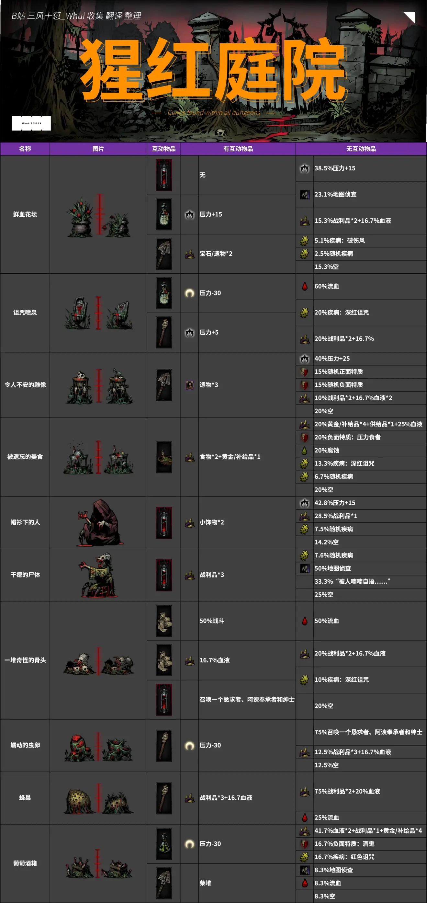
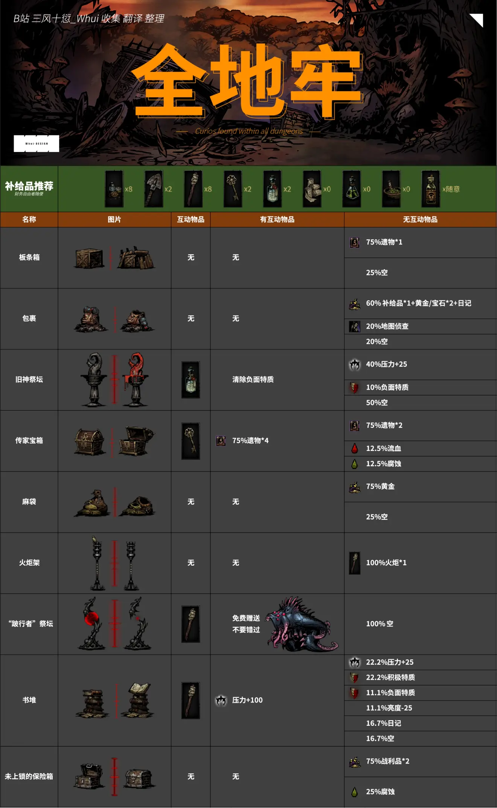
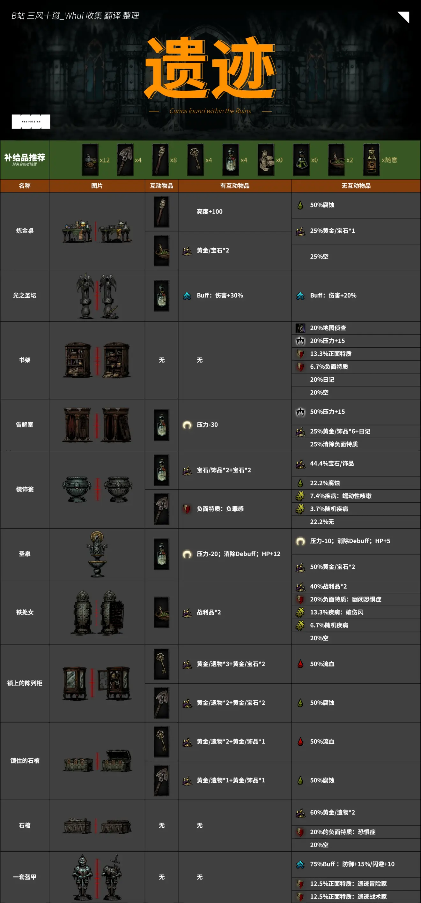
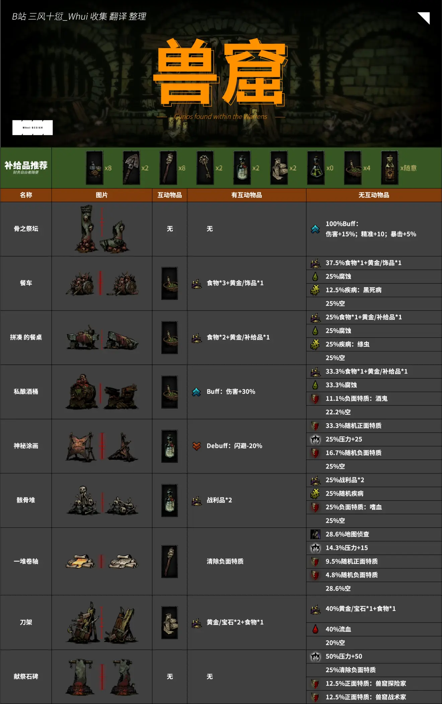
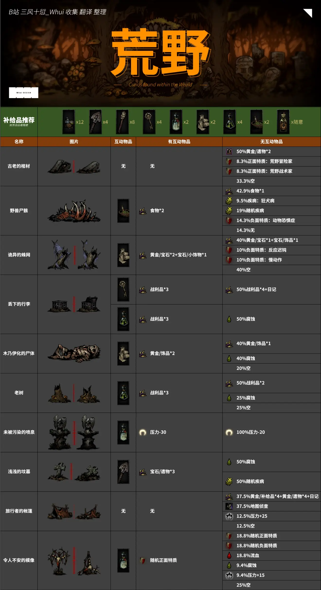

加载中...
文章
1
标签
2
分类
1
首页
时间轴
标签
分类
清单
音乐
照片
电影
友情链接
关于我
ZeaLotSean
首页
时间轴
标签
分类
清单
音乐
照片
电影
友情链接
关于我
暗黑地牢互动物品大全
发表于
2021-05-17
|
更新于
2021-05-17
|
Games
|
字数总计:
24
|
阅读时长:
1分钟
|
阅读量:
转载自:
https://www.bilibili.com/read/cv6848924/
猩红庭院

全地牢

遗迹

兽窟

荒野

海湾
文章作者:
ZeaLotSean
文章链接:
https://asuka4every.top/2021/05/17/darkest-dungeon-items/
版权声明:
本博客所有文章除特别声明外，均采用
CC BY-NC-SA 4.0
许可协议。转载请注明来自
ZeaLotSean
！
暗黑地牢
Games
ZeaLotSean
文章
1
标签
2
分类
1
Follow Me
公告
万般滋味, 都是生活
目录
1.
猩红庭院
2.
全地牢
3.
遗迹
4.
兽窟
5.
荒野
6.
海湾
最新文章
暗黑地牢互动物品大全
2021-05-17